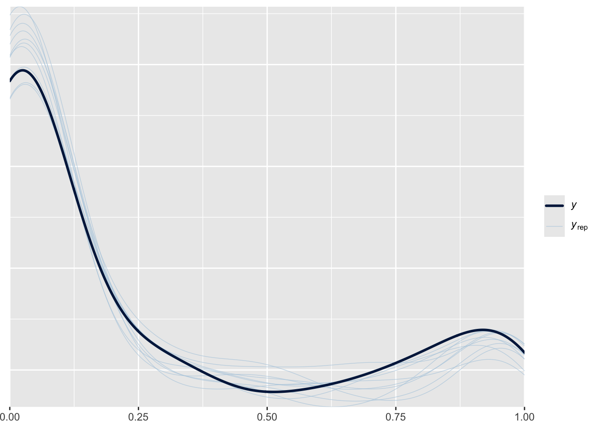

Simulation studies aren't even needed. A theorem is a theorem. FL is consistent whenever E(Y|X) is correct. MLE never is in this context. The only issue is efficiency loss compared with MLE when D(Y|X) is fully specified. But that's moving the goalpost for the FL estimator.
— Jeffrey Wooldridge (@jmwooldridge) February 20, 2023
This post focuses on one of the more curious models in contemporary statistics, a specification for proportions that is either called fractional logit or quasi-Binomial. An earlier version of this blog post had a much more negative take on the fractional logit specification. After dialogue with people on Twitter (who knew it could be useful??), I have revised this blog post to take into account other perspectives. As such, this blog post is now framed to be more open-ended. I still think there are issues with the utility of the fractional logit model, but understood within the motivation behind it, it does have a use. The question is when you would want to use fractional logit as opposed to a full-fledged stqtistical distribution like the continuous Bernoulli, ordered beta or zero-or-one inflated beta regression models.
To sum up my take for those who don’t want to wade through the analysis, I think that fractional logit is probably best applied to situations with big data where computational issues are likely to arise but the correct form of uncertainty is less of an issue. In these situations, fractional logit is an alternative to OLS that respects the bounds of proporitional/fractional outcomes, and is significantly easier to fit than the other alternatives discussed here. In addition, having a large dataset means that inefficiency or an incorrect form for the uncertainty of fractional logit estimates is unlikely to affect decision-making or inference.
Where I see less utility for fractional logit is where continuous Bernoulli but more so the beta regression models are valid alternatives. In these cases, fractional logit is supposed to guard against mis-specification worries, but it is not entirely clear how strong that worry can/should be given the specific domain of bounded continuous variables–i.e., there are only so many alternatives. In addition, it is difficult to characterize the performance of fractional logit vis-a-vis other models, which also makes it difficult to know when the specification issue might become more important than other facets of statistical distributions like fit and interpretability.
In this revised blog post I include the code and examples from the original post along with additional analyses that get into some of the Twitter feedback along with some of my previous evaluations of fractional logit. My hope is that it communicates honestly the state of research about these models and helps people make an informed choice.
If you want the code for this post, you can see the full Rmarkdown file here.
The Problem: What a Proportion Is
We can first start with the definition of the specification that is primarily used for fractional logit (abbreviated FL from here on), which comes from a 1996 paper by Papke and Wooldridge. Given a linear model \(X\beta\), a link function \(g(\cdot)\) (logit), and an outcome \(Y_i\) that can take on any value between 0 and 1, we have a likelihood as follows:
\[ L(Y_i) = g(x_i\beta)^{Y_i}(1-g(x_i\beta))^{(1 - Y_i)} \]
This is not the only likelihood or estimation possible for FL. Technically, the model is defined as the following:
\[ E(Y|X) = g(X\beta) \]
In other words, it only has to make an assumption about how we determine the expected value (average response) of the outcome \(Y\). That assumption is that the expected value is equal to a linear model (\(X\beta\)) scaled by the logit function to map on to a proportion (strictly between 0 and 1). I’ll discuss more below what this means in practice. For my purposes, I’ll stick with the likelihood above as that is what has been primmarily used to get estimates of the regression coefficients \(\beta\).
To get the intuition behind the likelihood, the definition is in fact the same for the Bernoulli distribution. The only difference is that instead of \(y_i\) being a binary variable with values of 0 or 1, \(y_i\) could be anything from 0 to 1, including 0.2, 0.4, etc. Inserting these continuous values into a discrete distribution is the clever method that Papke and Wooldridge came up with and labeled fractional for a fraction of 0 and 1. They also showed that it was possible to find a maximum to the likelihood function and obtain estimates for the regression coefficients \(\beta\) on the logit scale.
This model represented a substantial step forward from what was available at the time, mainly OLS. There were plenty of GLMs but not for a fractional or proportional response. No one was using beta regression as that model would not be proposed until 2004. For these reasons, fractional logit became very popular and has almost 5,000 citations according to Google Scholar.
However, this might lead to some head-scratching–sticking continuous data in a discrete distribution is, at a minimum, kind of odd. I was critical in my prior version of this blog post because this seemed to me be an objectively worse specification than using a fully formed statistical distribution. However, in my Twitter conversation with Jeffrey Wooldridge and others, the response essentially was, “you can’t fix it because it’s already broke.” In other words, the fractional logit’s lack of connection to a specific distribution is seen as a way of guarding against mis-specification. Or as Prof. Wooldridge put it,
FL in the tweet refers to fractional logit, and \(E(Y|X)\) is the expected value of a proportional outcome (0 to 1 inclusive). What Prof. Wooldridge is saying is that the FL estimator is consistent, or will on average be correct, whenever the simple linear model \(g(X\beta)\) is equal to the average value of the outcome. In other words, the statistical distribution doesn’t matter if all we care about is the expected, or average, value of the response.
To explain what is going on, it’s helpful to know what the logit function \(g(\cdot)\) does. The logit function scales any number (large or small, negative or positive) to a number strictly within 0 and 1. As a result, saying that the average value is equal to \(g(X\beta)\) is really just saying that the average value is equal to the linear model, which is of course what people expect when running a regression. As such, the model captures a critical part of regression model: how are the covariates on average related to the outcome/response?
What is a bit odd is that fractional logit has a relationship for the expected value \(E(Y|X)\) but not for the distribution of \(Y\). As another tweeter put it,
@rmkubinec To resolve the debate, it’s crucial to clarify the estimand:
— Lihua Lei (@lihua_lei_stat) February 21, 2023
(i) D(Y|X), D is the dist; or
(ii) E(Y|X)
For (i), it’s necessary to correctly specify D(Y|X), In this case, CB only works for CB, ordBeta only works for ordBeta, etc.
For (ii), it’s not necessary to…
1/3
Here Prof. Lei’s comment is about separating the average/expected value of the response \(E(Y|X)\) from the distribution of \(Y\), denoted \(D(Y|X)\). CB stands for continuous Bernoulli and ordbeta for ordered beta regression, two other models for proportional outcomes I will explain later. Prof. Lei’s point is that if we don’t care about the distribution of \(Y\), we can content ourselves with the expected value, which fractional logit can estimate regardless of what \(D(Y|X)\) is.
OK So What?
The reader at this point might think, OK, so I’m estimating the expected value of the response with fractional logit, not the full distribution. What’s going to happen to me, the statistical gods will strike me with lightning?1
The main drawback of not having a distribution is that we don’t know how certain we can be about the average value \(E(Y|X)\) because we don’t ever know the true (or so-called population) value. In frequentist statistics, which is the underlying basis for the paper cited above, the population value is the value we would obtain if we sampled \(Y\) over and over again and kept taking averages for \(E(Y|X)\) and if we kept averaging all of those averages we would know the “real” \(E(Y|X)\). But, in real life, we don’t know that value, just an estimate of \(E(Y|X)\), which we can denote \(\widehat{E(Y|X)}\). If our estimator is consistent, as FL is, then we know that \(\widehat{E(Y|X)}\) is an unbiased estimate for \(E(Y|X)\)–but only if we were to take many samples \(\widehat{E(Y|X)}\) and average them together. In most cases we have just one dataset, and we want to know how much we can learn about \(E(Y|X)\) from our regression coefficients that make up \(\widehat{E(Y|X)}\).2
For these reasons, if you read the Papke and Wooldridge paper, you’d find that it spends relatively little time on the specification of model/likelihood and instead most of its time on determining standard errors (and confidence intervals) for the regression coefficients that estimate \(\widehat{E(Y|X)}\). You can derive confidence intervals using maximum likelihood (MLE), but that would treat the FL specification as essentially being a part of the Bernoulli distribution, which it isn’t. As Papke and Wooldridge note, this naive estimate of the uncertainty will be over-confident. For these reasons, they propose a standard error correction that inflates standard errors in a similar manner to the so-called “sandwich” estimator (see the R package sandwich). These corrected standard errors, Papke and Wooldrige argue, are asympotically correct for any distribution \(D(Y|X)\), meaning that if we kept drawing samples from any distribution and recorded the average value \(\widehat{E(Y|X)}\) using FL, and then took the average of those samples, it would equal the same expected value as if we also calculated those average values using the appropriate model for \(D(Y|X)\) like beta regression. This feature of the distribution is, in other words, what Prof. Lei sees as the big feature of FL.
I can see the appeal of this trait of the model, but it is important to note that in statistics as in all of life, there is no such thing as a free lunch. The so-called bias-variance trade-off ensures that is almost never going to happen. I see the drawbacks as the following:
We have limited insight into how the standard error correction works. Papke and Wooldridge’s claim is that it is consistent, which would only hold across repeated samples, or what is known as asymptotically. We don’t know how well it would work in finite samples (as in the data we actually have), especially in terms of efficiency loss or how much we have to over-estimate uncertainty to avoid false positives. It’s hard to test this as we only have a set number of possibilities that we are aware of for \(D(Y|X)\), and how exactly FL does compared to each \(D(Y|X)\) may vary (i.e. beta regression versus continuous Bernoulli versus zero-one-inflated beta versus some model we aren’t even aware of yet).
We have a consistent estimate for \(E(Y|X)\), but this applies only to the regression coefficients and the uncertainty of those coefficients. If we wanted to calculate some non-linear combination of coefficients, we would have to adjust that uncertainty as well. We might not be able to use bootstrapping given that the sampling model is “wrong” (though I didn’t see any discussion of this in the paper). As such, it will be more tricky to use the estimates beyond making inferences, i.e. sign + significance.
- To give an example, we cannot make model predictions that include 0s and 1s. The logit function only produces numbers strictly between 0 and 1. This makes sense if you think about it—how could the outcome on average be equal to exactly 1 or 0? The probability of any particular value of a continuous random variable is always 0. If we sample from our estimate \(\widehat{E(Y|X)}\), we can only get draws for averages, not for individual variates. In other words, we might know that the average probability that white-collar workers turn out to vote in Minnesota is 33%, but we won’t know if that’s because the probability is close to 0 for most Minnesotans and close to 1 for a few or if the majority of Minnesotans have a roughly 20 - 40% chance of turning out to vote. Both of these distributions would have the same expected or average value of turning out to vote.
I am particularly concerned about #1. The standard error correction could be huge; there is nothing that constrains the variance of the estimates. In my paper on ordered beta regression, I simulated data and compared fractional logit with beta regression, OLS, and other alternatives, and its performance was hard to predict. On the one hand, it was closer to the correct value for \(E(Y|X)\) than OLS, which would fit with Papke and Wooldridge’s arguments. The estimates were also over-confident in terms of uncertainty, which again matches their work given that I did not adjust the confidence intervals (it is not clear how that would exactly be done in a Bayesian framework). But, in the empirical example, the FL estimates had uncertainty that was a couple of orders of magnitude greater than any of the other models (i.e., really wide CIs).
The question about the utility of FL seems to depend on how much we should be concerned about the possibility of mis-specification (we have the wrong distribution for \(Y\)) as opposed to inflating our uncertainty unnecessarily (and restricting what we can use our models for). Again, very similar to the bias-variance tradeoff.
What Are the Alternatives?
One way of framing this is what are the possibilities for \(D(Y|X)\) and how divergent are they? This is where it gets somewhat difficult as \(Y\) is a bounded outcome, and so, at least in my opinion, our alternative models seem somewhat limited.
The most direct comparison, and the specification that prompted this paper, is what has become known as the continuous Bernoulli distribution, which was derived by people working in the machine learning literature. Gabriel Loaiza-Ganem and John Cunningham looked at variational auto-encoders, which are models for pixels that make up images. Apparently people using these models had been employing something like fractional logit (for prediction, not inference), and they were likewise concerned about the fact that this specification was not a true statistical distribution. They went as far as identifying what the normalization constant is required to add to the fractional logit model to make it a true distribution, which turns out to be the following for a given value of the linear predictor \(g(X\beta)\), which I denote as \(\mu\) (see their eqn (7)):
\[ C(\mu) = \begin{cases} \frac{2 \text{tanh}^{-1}(1 - 2\mu)}{1 - 2\mu} & \text{if } \mu \ne 0.5 \\ 2 & \text{otherwise} \end{cases} \]
This thing, to be honest, is kind of ugly, and has a fixed point at 0.5 or 50%, meaning that there is a point where the value of the outcome and the combined value of the covariates must be equal to 0.5. The authors decided to name this distribution, which could be thought of as fractional logit with the minimal number of changes to make it a full distribution, as the continuous Bernoulli distribution. I am cutting and pasting their Figure 1 to show what the distribution looks like:

Essentially, the distribution allows for mildly sloping lines across 0 to 1 that can be either upward or downward. The value of the normalizing constant \(C(\mu)\) in the leftward panel is much bigger towards the boundaries of the distribution, which intuitively makes sense. As the distribution moves towards extreme values, the denominator has to change to take into account the non-linearity in the outcome.
Furthermore, they show in the paper that what they call the lack of normalization has a clear impact on performance. They use an image-learning task and examine how continuous Bernoulli without normalization (i.e., vanilla fractional logit) compares to continuous Bernoulli with normalization. Again, I’ll copy and paste their key result here:

In this figure, CB represents continuous Bernoulli and B is the fractional logit. As can be seen, the images are much sharper with continuous Bernoulli (normalized) than fractional logit. The authors point out that this is likely due to the normalizing constant becoming so large towards the extremes of the distribution: the un-normalized distribution has a hard time knowing where the boundaries are.
This is an intriguing result, though it is important to note that the original FL model says almost nothing about predictive validity, but rather about making inferences about regression coefficients. Machine learning has a different set of goalposts, so it might not be surprising that FL just doesn’t cut it. In either case, we do end up with a new distribution for \(Y\) that very close to FL. I wrote this blog post in part to highlight this new model. Whether CB is a true alternative or fix for FL is difficult to say as FL estimates are supposed to average across all possible distributions (for good or ill). However, what can be said is that it appears to the specification that makes the minimum number of necessary statements about the distribution of \(Y\) while providing an estimate for the average value \(E(Y|X)\) as well.
Example
This distribution is not available currently in R, though it can be implemented fairly straightforwardly in Stan. It is also available in tensorflow in Python, but as I’m not primarily a Python user, I’ll stick with R. I produce code below that can fit this model with the R package brms as a custom family, and in the future I plan to add support for it to ordbetareg. I still think ordered beta regression makes more sense as a default, especially with the issues with the normalizing constant in the continuous Bernoulli, but it is great to have this model as another robust alternative for bounded continuous variables.
To demonstrate how to fit continuous Bernoulli, I first generate data using the rordbeta function in ordbetareg that will create proportion data from 0 to 1 inclusive. I’ll add a covariate X to predict the mean of the distribution on the logit scale (which continuous Bernoulli also uses) with a coefficient of 2.5:
library(ordbetareg)
N <- 500
X <- runif(n=N)
Y <- rordbeta(n=N, mu = plogis(-2 + 2.5*X),cutpoints=c(-3,3))
hist(Y)The outcome has a distinct U-shape and 70 discrete responses (0 or 1).
The code below defines the custom family for brms to work (the model will soon be available in my package ordbetareg):
c_bernoulli <- custom_family("c_bernoulli",
dpars="mu",
links="logit",
lb=0,ub=1,
type="real")
# define log density function
# some code from spinkey https://discourse.mc-stan.org/t/continuous-bernoulli/26886
stan_funs <- "
//normalization constant
real c_norm(real mu) {
if(mu==0.5) {
return log(2);
} else {
real const = (log(2 - 2*mu) - log(2*mu))/(2 * (1 - 2*mu));
return(log(const));
}
}
// log PDF for continuous Bernoulli
real c_bernoulli_lpdf(real y, real mu) {
// unnormalized density
real lp = y * log(mu) + (1 - y) * log1m(mu);
// normalized density
lp += c_norm(mu);
return lp;
}"
stanvars <- stanvar(scode = stan_funs, block = "functions")
# posterior predictions
posterior_predict_c_bernoulli <- function(i, prep, ...) {
# need inverse CDF function for continuous bernoulli
inv_cdf <- function(i=NULL,mu=NULL,u=NULL) {
mu <- mu[i]
u <- u[i]
if(mu==0.5) {
out <- u
} else {
out <- (log(u * (2 * mu - 1) + 1 - mu) - log(1 - mu))/(log(mu) - (log(1-mu)))
}
return(out)
}
mu <- brms::get_dpar(prep, "mu", i = i)
u <- runif(n=length(mu))
sapply(1:length(mu),inv_cdf,mu,u)
}
posterior_epred_c_bernoulli <- function(prep) {
# expected value
mu <- brms::get_dpar(prep, "mu")
t(apply(mu, 1, function(r) {
sapply(r, function(mu_i) {
if(mu_i==0.5) {
return(0.5)
} else {
(mu_i / (2 * mu_i - 1)) + (1 / (2*atanh(1 - 2*mu_i)))
}
})
}))
}
fit_c_bern <- brm(
Y ~ X, data = tibble(Y=Y, X=X),
family = c_bernoulli, stanvars = stanvars, backend="cmdstanr",
refresh=0
)Running MCMC with 4 sequential chains...
Chain 1 finished in 0.9 seconds.
Chain 2 finished in 0.9 seconds.
Chain 3 finished in 1.0 seconds.
Chain 4 finished in 1.0 seconds.
All 4 chains finished successfully.
Mean chain execution time: 1.0 seconds.
Total execution time: 4.1 seconds.library(marginaleffects)
avg_slopes(fit_c_bern)
Term Estimate 2.5 % 97.5 %
X 0.51 0.443 0.568
Columns: term, estimate, conf.low, conf.high The avg_slopes function from the marginaleffects package gives the marginal effect of the parameter back-transformed to 0/1. The continuous Bernoulli estimates a very big marginal effect for X (it is not the same as the true coefficient because that was on the logit scale, not the true scale). We can plot the posterior predictive distribution:
pp_check(fit_c_bern)It’s a bit off, but pretty close, and we probably shouldn’t expect it to be perfect given that the data was generated from the ordered beta distribution, not the continuous Bernoulli.
We can then compare those results to the ordered beta regression in ordbetareg:
fit_ordbeta <- ordbetareg(
Y ~ X, data = tibble(Y=Y, X=X),
backend="cmdstanr",
refresh=0
)Running MCMC with 4 sequential chains...
Chain 1 finished in 2.3 seconds.
Chain 2 finished in 2.4 seconds.
Chain 3 finished in 2.4 seconds.
Chain 4 finished in 2.3 seconds.
All 4 chains finished successfully.
Mean chain execution time: 2.4 seconds.
Total execution time: 9.7 seconds.avg_slopes(fit_ordbeta)
Term Estimate 2.5 % 97.5 %
X 0.489 0.409 0.561
Columns: term, estimate, conf.low, conf.high pp_check(fit_ordbeta)
The marginal effect of X is fairly close to the continuous Bernoulli’s, and the posterior distribution is much closer to the true distribution. But again, we generated the data from the ordered beta distribution so it’s not surprising that the continuous Bernoulli estimate is different. It might take some time to figure out exactly where and when the distributions will differ. For this relatively simple example, the marginal effects of both distributions are fairly close.
So What Do We Do?
I think there are still some unanswered questions—which of these distributions will FL’s estimates match most closely? Notably, both CB and ordered beta have a defined expected value for \(Y\) that is very close to the logit function plus covariates, i.e. \(g(X\beta)\). CB and FL are probably not going to produce estimates that are very different–the main difference is that CB’s estimates will be valid based on the uncertainty of the distribution, while FL’s estimates will be over-confident without using standard error corrections. Because ordered beta regression is making a much more nuanced statement about the distribution for \(Y\), its estimates of uncertainty could diverge even further from FL’s in finite samples.
However, the main criteria we would want to know for FL is hard to define–how concerned are we about getting the wrong model? CB is an intriguing new model, but it is quite simple, and it’s not clear when it would be preferred over something more complicated yet also more robust like beta regression. After all, CB has the strange property of fixing the expected value of the outcome at 0.5. All models have uses, and I am sure this one does, but it would seem to best apply in situations where the limited possibilities for uncertainty match the research question closely.
That is why, in my opinion, FL makes the most sense when we have a lot of data. As the amount of data increases, confidence intervals will shrink regardless of the inflation factor we use. Furthermore, nuances in our estimation of uncertainty may be less noticeable as uncertainty disappears. FL has a noted advantage in that it is the easiest model to estimate–it is quite literally a standard Bernoulli (logit) model. CB is close but certainly has additional complications, while the beta regression has a lot more computation necessary. If computation is a limitation, FL strikes me as a useful alternative to OLS as it will produce estimates that are valid for a bounded dependent variable.
I do think that further research would be useful to clarify these questions, especially comparing FL’s uncertainty under different distributions \(D(Y|X)\). These would be helpful for knowing when mis-specification of \(D(Y|X)\) is a real problem and when we might want to use something like FL that inflates uncertainty. My sense that beta regression (standard or ordered beta or zero-inflated beta) is still the best generic model for bounded continuous data as it fits these outcomes well and is a full-featured statistical distribution.